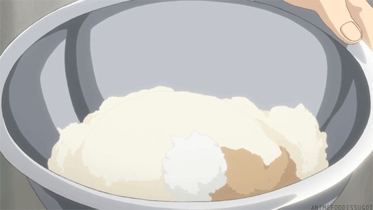

Nothing beats the satisfying "crunch" of a fresh donut meeting a thick coat of sparkling sugar, revealing a center as soft as a Ghibli dream. These golden rings of joy are worth every minute of proofing time, especially when they come out of the oil warm, puffy, and ready to devour.
Ingredients
The Yeast Mixture:
2 1/4 tsp Active dry yeast (1 packet)
2 tbsp Warm water (around 38°C)
3/4 cup Warm milk
The dough:
2 1/2 cupsAll-purpose flour
1/4 cup Sugar
1/2 tsp Salt
1 Large egg, beaten
3 tbsp Butter, melted and cooled
1 liter Vegetable oil (for frying)
Instructions
Step 1: The Rise
In a small bowl, combine the warm water, warm milk, and yeast. Let it sit for about 5 minutes until it becomes foamy and bubbly.
In a large bowl, whisk the flour, sugar, and salt. Pour in the yeast mixture, egg, and melted butter. Stir until a soft dough forms.

Whisking the dry ingredients together
Turn the dough onto a floured surface and knead for 5-8 minutes until smooth and elastic.
Place the dough in a greased bowl, cover with a damp cloth, and let it rise in a warm spot for 1 hour or until it has doubled in size.
Step 2: Shaping the Rings
Punch the dough down to release air. Roll it out on a floured surface to about 1.5 cm thickness.
Use a donut cutter (or a glass and a bottle cap) to cut out your circles and holes.
Shaping the donuts into rings
Place the cut donuts on a parchment-lined tray, cover, and let them rise again for 30 minutes. They should look puffy and delicate.
Donuts resting after shaping
Step 3: The Fry
Fill a heavy-bottomed pot with oil and heat it to 175°C.
Gently drop 2-3 donuts into the oil at a time.
Adding donuts to hot oil for frying
Fry for about 60-90 seconds per side until they are a deep golden brown.
Flipping donuts in the oil
Use a slotted spoon to remove the donuts and place them on paper towels to drain excess oil.
Step 4: The Finishing Touch
While the donuts are still hot, toss them in a bowl of granulated sugar or cinnamon-sugar.
These are best enjoyed immediately while the center is still warm and fluffy.